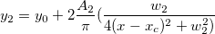

1つの独立変数に2つの従属変数があり、パラメータを共有します。
数：6
パラメータの名前:y0, xc, A1, A2, w1, w2
意味:y0 = オフセット, xc = 中央, A1 = 面積, A2 = 面積, w1 = 幅, w2 = 幅
下側境界:w1 > 0.0, w2 > 0.0
上側境界:なし
FITFUNC\GaussianLorentz.fdf
Multiple Variables
^2}")